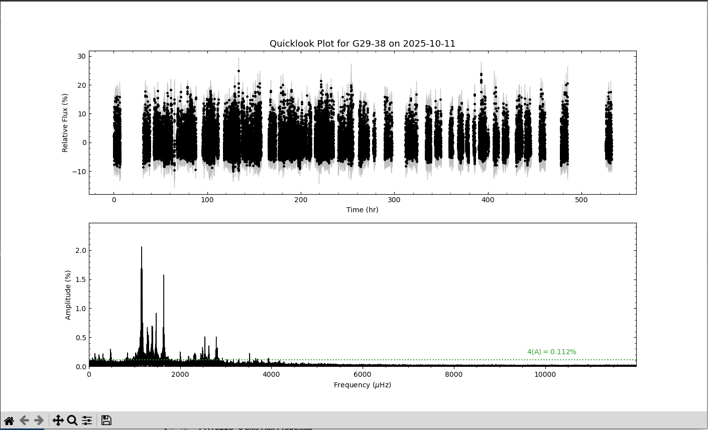
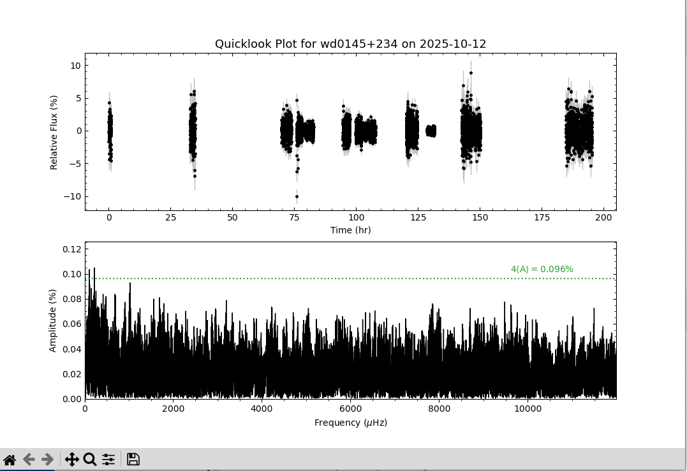
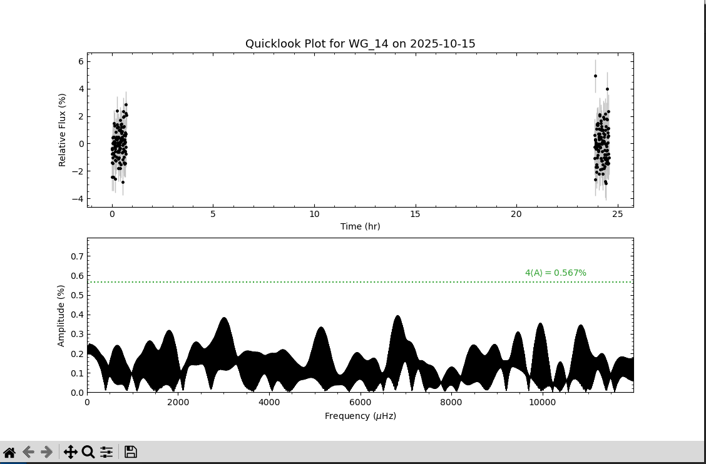
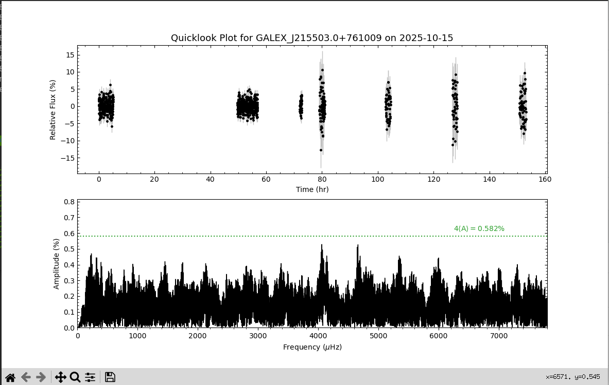
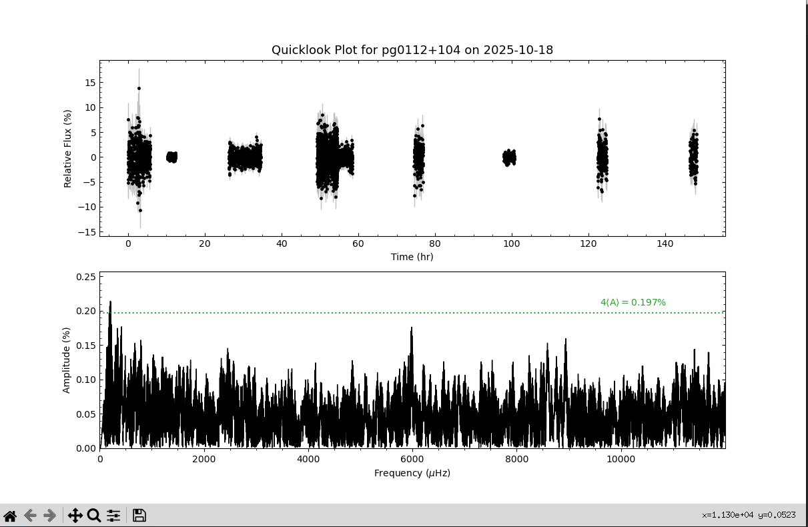
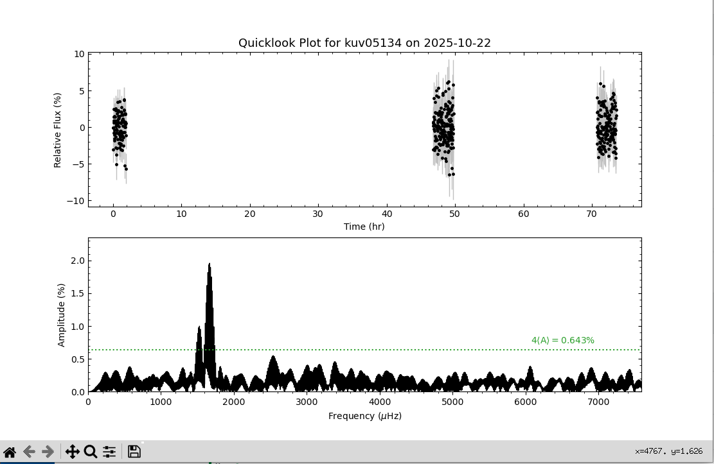
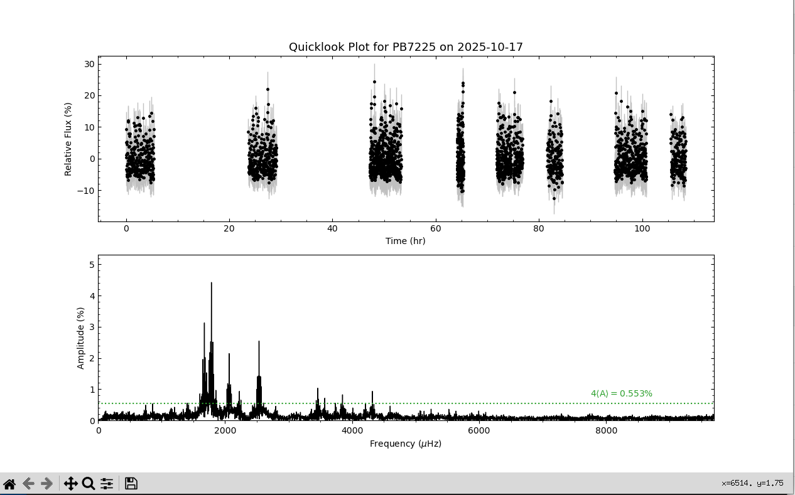

General Run Information
Main Campaign Dates: October 13th through October 27th
Extended Dates: October 30th through November 6th
This Whole Earth Telescope (WET) observation campaign is focused on studying the morphology of the debris disk around the pulsating hydrogen atmosphere (DAV) white dwarf G29-38.
This project requires concurrent observations at both optical and infrared wavelengths to study G29-38's debris disk. The project’s goal is to investigate the disk’s response to G29-38’s
photospheric pulsations and use that information to probe the disk’s morphology. These debris disks are important to our understanding of exoplanet composition and planetary system evolution.
Understanding the nature of the dust in the debris disk and the geometry of its distribution is vital to calculate debris masses and lifetimes, and to constrain the mechanisms that resulted in
the formation of the disk in the first place. G29-38 provides the perfect target to validate a new methodology to probe the morphology of WD debris disks. WET is a network of telescopes spread
across the Earth in longitude that are operated as a single instrument to obtain nearly continuous photometric observations of each target. Twenty to twenty-five telescopes typically participate
in a single WET run. An interactive headquarters will communicate with observers nightly to ensure coverage of the primary target (G29-38). This coverage is crucial to accurately identify pulsations
and multiplets seen in multiperiodic pulsators, as it prevents confusing window aliases in the Fourier analysis of the light curves. By merging data from individual sites into a single light curve, we
acquire a nearly continuous time-series record of a star’s brightness variations. When the run is complete, and the individual light curves merged, our data set with an expected time base of 14 days
(1,200,000 seconds) will be able to identify frequency separations greater than 0.8 μHz.
Light curves
We will update the complete campaign light curves of our targets after the data from each telescope's night of observation has been received and reduced by the Headquarters using the Maestro (Dalessio 2010)
and phot2lc (Vanderbosche 2021) software packages. The top panel of the light curves show the observations of a target in relative flux versus time since the first recorded observation.
The second panel shows the light curve transformed into frequency space, allowing us to identify the presenece of pulsations.
G29-38

Here is the light curve of G29-38 after 23 nights of observing. We can see that G29-38 currently has very large pulsations occuring.
ZTF J0328-1219

Here is the light curve of ZTF J0328-1219 after the first 7 nights of observing. These observations are in support of Hubble observations that occurred this October. ZTF J0328-1219 is a very interesting target
that has dips in brightness caused by transits of dust in its debris disk.
WD 0145+234

Here is the light curve of WD 0145+234 after the first 7 nights of observing. This data has allowed us to place a strong limiting amplitude on any possible pulsations.
The only significant pulsation is likely being caused the gaps in data.
WG 14

Here is the light curve of WG 14 after 2 nights of observing. This data has allowed us to place a strong limiting amplitude on any possible pulsations.
The only significant pulsation is likely being caused the gaps in data.
GALEX J215503.0+761009

Here is the light curve of GALEX J215503.0+761009 after 7 nights of observing. This data has allowed us to place a strong limiting amplitude on any possible pulsations, with no significant pulsations seen.
PG 0112+104

Here is the light curve of PG 0112+104 after 7 nights of observing. This data has allowed us to place a strong limiting amplitude on any possible pulsations.
The only significant pulsation is likely being caused the gaps in data.
KUV 05134+2605

Here is the light curve of KUV 05134+2605 after 3 nights of observing. Two significant pulsation frequencies can be seen.
PB 7225

Here is the light curve of PB 7225 after 5 nights of observing. PB 7225 is in a state of rich pulsations currently.
GD 532

Here is the light curve of GD 532 after 8 nights of observing. GD 532 has several strong pulsations currently.